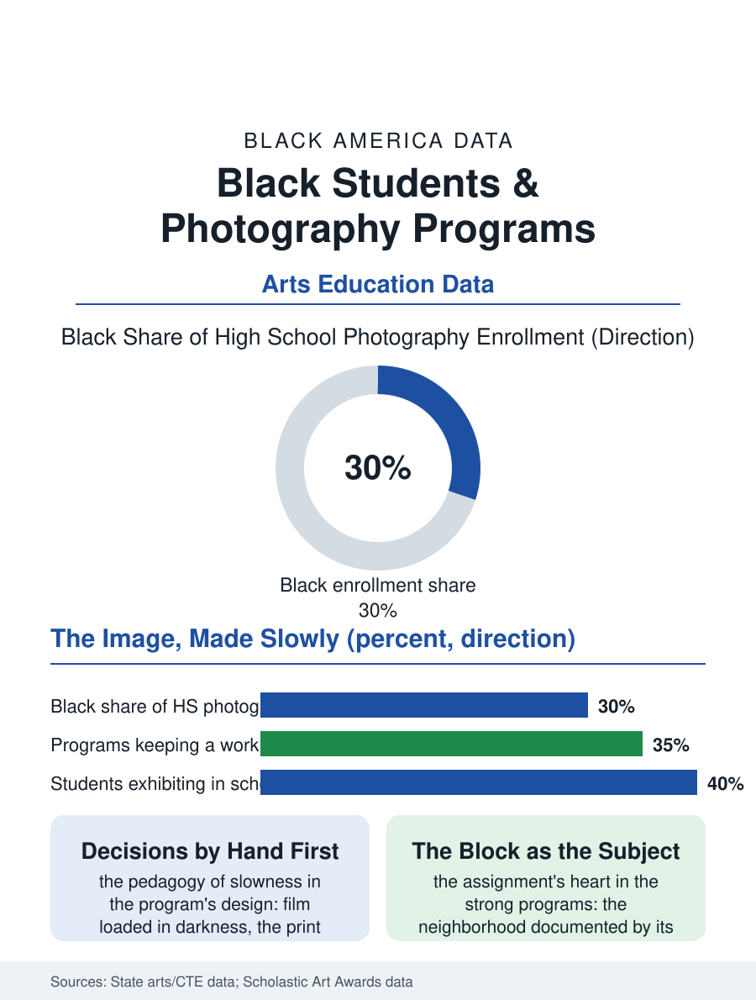

Black Education
Under the Red Light: Black Students and Photography
The print emerging in the tray, the block documented by its own, in the room the budget keeps failing to close. The photography file.

The photography program is the arts file's most democratic lab: the darkroom's red light and the digital lab's screens teach the image as a made thing in a culture saturated with images taken, and Black students, heirs of the tradition that documented itself when no one else would, enroll in the school programs with the camera's history already in their hands. This article reads the photography program file.
The Darkroom's Discipline
The program's classic form teaches the image backward from the phone's instant: the film's loading in darkness, the exposure's arithmetic, the print's emergence in the tray, a slowness whose pedagogy the instructors defend as the curriculum itself, the student learning that the photograph is a series of decisions by making each one with her hands before the software is allowed to make them invisibly. The digital lab that succeeds it in most buildings teaches the same decisions at the interface, the exposure triangle and the histogram and the edit's ethics, on the equipment cycle of the media file's three-year clock. The school's darkroom survives in the districts that kept it as the program's signature, its chemistry and its plumbing a capital argument the arts budget makes against the screen's cheapness, won where the instructor's tenure and the alumni's testimony hold the line. The students' subject is the file's heart: the school photographic assignment, in the strong programs, is the neighborhood itself, the students sent to document their own blocks with the photographer's eye and the historian's brief, producing the archive the community keeps, in the direct line of the tradition from the freedom era's movement photographers to the family album's keeper. The yearbook's staff photographers pass through the program as its working press, their assignments the school's official memory made weekly, a responsibility the building grants its sixteen-year-old documentarians with a trust the file finds entirely justified by the archive they produce.
The Portfolio and the Profession
The program's outputs divide as the arts files' do: the portfolio for the art school's admission, judged on the body of work the darkroom's discipline produces at a quality the phone's volume cannot, and the commercial file, the wedding and the portrait and the product work of the photography business file, whose junior tiers hire the program's completers for the second-shooter and the retoucher's chairs. The contest and the exhibition file is the program's public audit, the scholastic art awards' photography categories being among their most entered, with the school gallery's show, the prints matted and lit in the corridor, performing the arts file's standing function of making the students' mastery visible to the building that graded them on other subjects. The equipment's equity file is the camera's own: the program's loaner shelf, the bodies and lenses the students check out against the weekend, is the instrument library of the music file translated to light, its adequacy deciding whose portfolio is made on the school's glass and whose on the phone's, a difference the judges of the portfolio can see and the strong programs therefore refuse to allow.
Documenting Themselves
The photography file closes on the tradition the program consciously teaches, because Black photography's school history is a freedom history: the portrait studios of the business file's were the community's first image of itself in its own hands, the movement's photographers were its witnesses, and the contemporary masters are the culture's visual authors in the present tense, so that the high school darkroom is a room in a house with a known address in the culture's memory, and the students are told so, in the programs that know their own syllabus's weight. The phone has made every student a photographer in the file's smallest sense; the program exists to make her one in the largest, the maker of the image that lasts. The scholastic counts rise with the digital lab's spread. The file's last entry is the print's emergence in the tray under the red light, the image arriving from the blank in the student's own hands at the process's pace, a small resurrection the phone has never once performed for her, and the reason the room, against every budget's logic, is still lit red in the schools that can keep it.
More in Black Education
Black Educational Attainment: High School Parity, the College Gap
About 89 percent of Black adults hold a high school diploma and one in four holds a bachelor's degree or higher — the attainment ladder, the college completion gap, and the generational trend.
Historically Black Colleges and Universities: Enrollment and Degrees
More than 100 HBCUs enroll roughly 290,000 students and award about one in six Black bachelor's degrees — an outsized share from a small sector. The federal education data.
Black College Enrollment: 2.4 Million Students
About 2.4 million Black students are enrolled in American colleges — nearly two-thirds of them women. The NCES enrollment data by sector, level, and trend.
Source: State arts and career education data; Scholastic Art and Writing Awards photography category data.